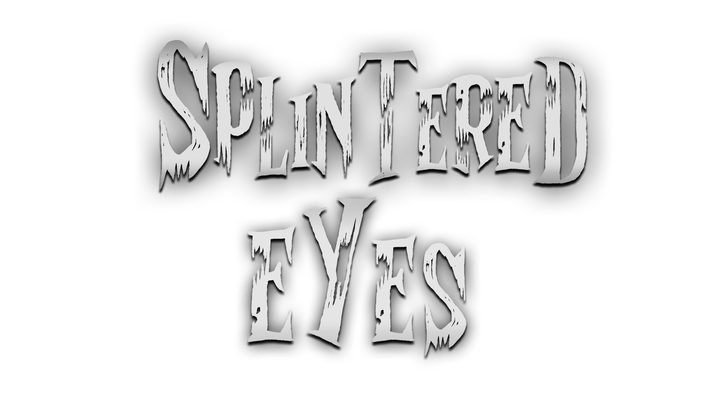
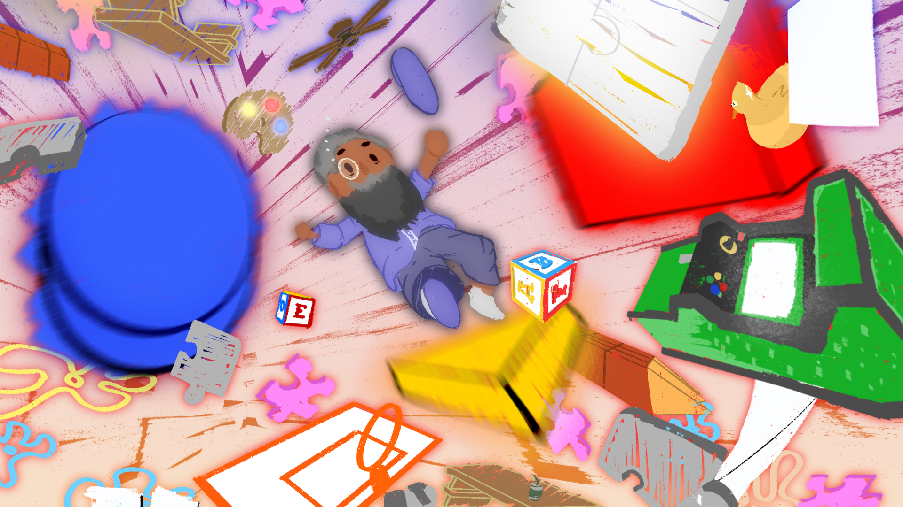

PROJECTS
Splintered Eyes

Event: Nice To Meet You Game Jam
Role: Technical Designer
Team Size: 6
Duration: 1 Week
Contributions: In this week long Game Jam, I constructed all the game logic and systems using Unreal Blueprints, did the post processing, and assisted with asset implementation.
Engine & Tools: Unreal Engine 5, Unreal Blueprints
Memoirs

MindMatters Studios
Role: Level Designer
Contributions: I was one of the Level Designers for this project. personally responsible for the prototype and build of the Arcade level and finalized the Studio/Void level. I also modeled the claw machine.
Engine & Tools: Unity, Maya, & Substance Painter
Obscura

Three Choirs
Role: Level Designer
Contributions: I contributed towards the game's asset implementation, collisions, navmesh, and environmental lighting, and made the initial whitebox and lean mechanic.
Engine & Tools: Unity & Microsoft Visual Studio
Citro-Man

PacBros
Role: Level Designer
Contributions: I created and painted the tilemaps, set up the collisions, assisted our programmer, and organized the project.
Engine & Tools: Unity, Microsoft Visual Studio, & Photoshop